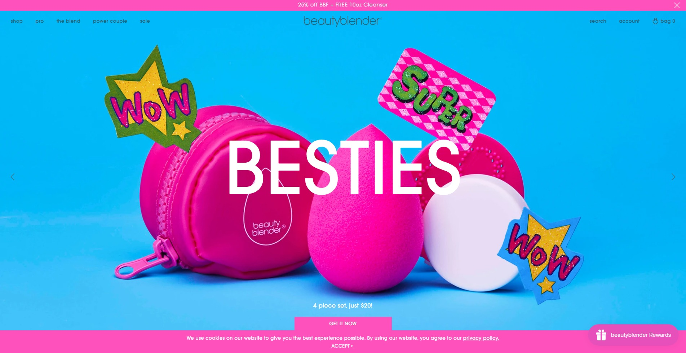
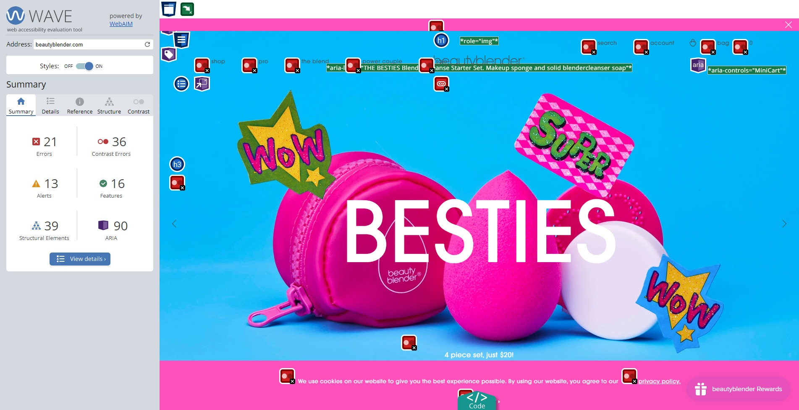

The practice of Web accessibility helps to lift barriers that might prevent people with physical or situational disabilities from interacting with or accessing a website. Federal agencies and the companies that do business with them are required under Section 508 of the Rehabilitation Act of 1973 (29 U.S.C § 794 (d)) to make their electronic and information technology (EIT) accessible to people with disabilities.
While this requirement doesn't currently apply to all organizations, web accessibility should be considered in a variety of build processes. The web is an important resource in many aspects of our lives and regardless of our abilities or limitations, everyone should have equal access to these resources.
We'll touch on a few accessibility guidelines today as we analyze the beautyblender® site, beautyblender.com, using the WAVE Web Accessibility Evaluation tool.
 beautyblender® Homepagebeautyblender® is well known for its iconic makeup sponge, a tool applauded by many for it's effortless blending. It has taken home numerous Best of Beauty Awards and is an essential tool in many makeup bags.
beautyblender® original makeup spongeBackground about Evaluation
The Web Content Accessibility Guidelines, also known as WCAG, explains how to make Web content accessible to people with disabilities. At a glance, this includes ensuring that a website is Perceivable, Operable, Understandable, and Robust (POUR).
Perceivable
- Provide text alternatives for non-text content.
- Provide captions and other alternatives for multimedia.
- Create content that can be presented in different ways, including by assistive technologies, without losing meaning.
- Make it easier for users to see and hear content.
Operable
- Make all functionality available from a keyboard.
- Give users enough time to read and use content.
- Do not use content that causes seizures or physical reactions.
- Help users navigate and find content.
- Make it easier to use inputs other than keyboard.
Understandable
- Make text readable and understandable.
- Make content appear and operate in predictable ways.
- Help users avoid and correct mistakes.
Robust
- Maximize compatibility with current and future user tools.
Results and Recommended Actions
WAVE's online evaluation tool can help developers make their web content more accessible to people with disabilities. It can identify many accessibility issues known to impact users and it can also identify WCAG errors.
 WAVE evaluation tool summaryThe WAVE tool highlights areas on a site that are important in accessibility, organizing the findings into the following categories:
- Errors
- Contrast Errors
- Alerts
- Features
- Structural Elements
- ARIA
beautyblender®'s evaluation revealed a number errors in the summary tab. A closer look at the details show that many of the errors could impact certain users with disabilities. The errors in red indicate accessibility issues and failure to meet WCAG guidelines.
beautyblender® failed to meet a number of the guidelines listed by the WCAG:
Perceivable
| Findings | Recommendations |
|---|---|
|
|
Operable
| Findings | Recommendations |
|---|---|
|
|
Understandable
| Findings | Recommendations |
|---|---|
|
|
Robust
| Findings | Recommendations |
|---|---|
|
|
Key Takeaways
Overall, many of the beautyblender® errors identified in the WAVE evaluation are issues that could be easily resolved with the right tools and knowledge. The goal should be to give all users the best experience possible regardless of limitations or disabilities. In some cases, all it takes is a little thought and a few small changes.
Images from beautyblender.com and by Ray Piedra from Pexels.